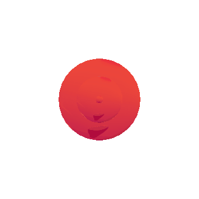

Safety
Always Safety First!
Our bioreactor contains self-created polymersomes with integrated enzymes, so-called chassis. They are no living organisms and especially cannot reproduce.
So, we did not face any issues releasing a living organism into the environment by creating the bioreactor.
However, even despite M.A.R.S. not releasing a living organism to the environment, other maybe less obvious biosafety issues had to be considered during the project creation and handling the resulting bioreactor. Those project-related safety considerations are divided into the following categories:
However, even despite M.A.R.S. not releasing a living organism to the environment, other maybe less obvious biosafety issues had to be considered during the project creation and handling the resulting bioreactor. Those project-related safety considerations are divided into the following categories:

Lab Safety
First, it is looked at the safety of the work in the laboratory. All organisms we worked with, Escherichia coli, Saccharomyces cerevisiae
and Halobacterium salinarium, are considered biosafety level 1 (BSL-1). This means all these organisms we used are not known to consistently cause disease in immunocompetent
adult humans and have a minimal potential hazard to laboratory personnel and the environment. Additionally, the whole team attended a lab safety and biosafety level 1 instruction.
Here we have been taught how to behave in the lab and how to deal with organisms, chemicals and waste. In the course of this, we learned many rules which we always stuck to.
These rules include that all persons working in the lab have to wear lab coats and need to wash their hands before and after visiting the lab space.
The laboratory has safety equipment for different cases, including normal accidents and risks when working with chemicals. Besides the emergency exits, there are showers for eyes and the whole body, fire extinguishers and first aid kits. For working with chemicals, there are gloves and hoods available. For more information about safety in the lab, we can recommend the "Laboratory biosafety manual" from the World Health Organization. Our thoughts about the application of lab safety in our project M.A.R.S. can be found in our Safety Form.
The laboratory has safety equipment for different cases, including normal accidents and risks when working with chemicals. Besides the emergency exits, there are showers for eyes and the whole body, fire extinguishers and first aid kits. For working with chemicals, there are gloves and hoods available. For more information about safety in the lab, we can recommend the "Laboratory biosafety manual" from the World Health Organization. Our thoughts about the application of lab safety in our project M.A.R.S. can be found in our Safety Form.
Safety regarding the Covid-19 pandemic
Further safety considerations not concerning lab safety in the first place were mandatory this year due to the Covid-19 pandemic. Personal contact should be minimized
in order to avoid spreading the virus. We, therefore, had notably in the first few months, most of our meetings online. The weekly team meetings have been held exclusively
online until mid-August. From then on, we had personal team meetings again but we also always washed our hand when we arrived at the meeting room and only took off our masks
when we sat on our places.
Also the meetings with other teams were exclusively online apart from a few exceptions, in order to not expose our members and our collaborators to any kind of unnecessary risk factors. The exceptions were our three MeetUps with the iGEM Team MSP Maastricht. However, to also minimize the risks in these personal meetings we ensured that the safety distance between two people was kept when it was possible and that masks were worn whenever this was not the case.
Regarding the lab there were new regulations to follow too. Since it reopened in June the number of people allowed to enter the lab at a time was restricted to only 16. For us and M.A.R.S., this meant that only one team member could enter the lab at a time. Wearing a mask was mandatory when entering the building. All personal contact like shaking hands should be avoided and a distance of two meters was recommended. If someone had to sneeze or cough, he should always do this in the armpit.

Also the meetings with other teams were exclusively online apart from a few exceptions, in order to not expose our members and our collaborators to any kind of unnecessary risk factors. The exceptions were our three MeetUps with the iGEM Team MSP Maastricht. However, to also minimize the risks in these personal meetings we ensured that the safety distance between two people was kept when it was possible and that masks were worn whenever this was not the case.
Regarding the lab there were new regulations to follow too. Since it reopened in June the number of people allowed to enter the lab at a time was restricted to only 16. For us and M.A.R.S., this meant that only one team member could enter the lab at a time. Wearing a mask was mandatory when entering the building. All personal contact like shaking hands should be avoided and a distance of two meters was recommended. If someone had to sneeze or cough, he should always do this in the armpit.
Safe handling of the bioreactor
The third category of essential safety considerations regarding our project M.A.R.S. is about handling our final bioreactor. As it holds for all bioreactors, the user
should be introduced to all functionalities, mainly because it is connected to electricity. Otherwise, the magnetic immobilization would not work. Moreover, people with
a pacemaker should be aware of the bioreactor's magnetic field. Although the magnetic field induced in the reactor will be weak and most likely cause no harm even to people
with pacemakers, it is still a knowledge the user should be provided with. The reactor is dimensioned using internationally normed procedures, minimizing the risk of mechanical
failure due to stress, strain and material fatigue.
Additionally, there are no mechanical risks like high pressure, high temperature or others. However, all of this could change when using the bioreactor for reactions that introduce new dynamics leading to such risks. Thus, the user should be asked to examine newly applied reactions carefully.
Additionally, there are no mechanical risks like high pressure, high temperature or others. However, all of this could change when using the bioreactor for reactions that introduce new dynamics leading to such risks. Thus, the user should be asked to examine newly applied reactions carefully.